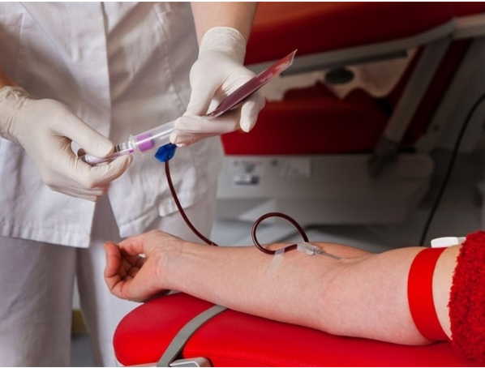

Notícias e Curiosidades
Fique por dentro de histórias, novidades e informações sobre a doação de sangue
Marcos Vinícius
Marcos Vinícius enfrentou um tumor no sangue aos 17 anos e precisou de mais de 100 bolsas de transfusão.
Ver detalhes
Tenho 70+, posso doar?
Pessoas com 70 anos ou mais poderão ser doadoras, segundo o novo regulamento da hemoterapia no Brasil.
Ver detalhesNovas regras para doação!
Tatuagens e procedimentos estéticos podem exigir espera de apenas sete dias. Verifique as novas regras para a doação de snague!
Ver detalhes